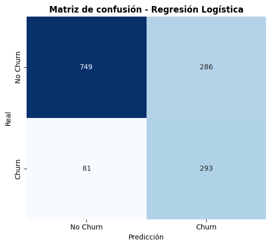
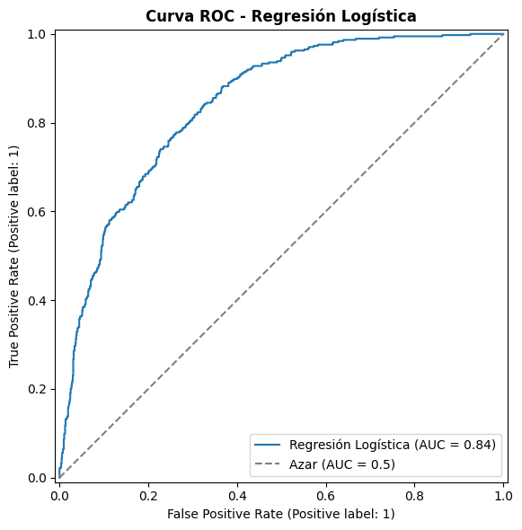

Preprocesamiento de Datos - Telco Customer Churn#
Objetivo: A partir de los hallazgos del EDA (EDA.ipynb), aplicar de forma sistemática los pasos de limpieza, codificación y escalado necesarios para dejar los datos listos para el modelado, evitando data leakage entre train y test.
1. Importación de librerías#
import pandas as pd
import numpy as np
import hashlib
from pathlib import Path
from sklearn.model_selection import train_test_split, StratifiedKFold, cross_val_score
from sklearn.pipeline import Pipeline
from sklearn.compose import ColumnTransformer
from sklearn.preprocessing import StandardScaler, OneHotEncoder
from sklearn.linear_model import LogisticRegression
from sklearn.dummy import DummyClassifier
from sklearn.impute import SimpleImputer
RANDOM_STATE = 42
# Nota: se retira `warnings.filterwarnings('ignore')`. Ocultar todos los avisos
# también oculta RuntimeWarning legítimos (p. ej. divisiones por cero reales),
# como el que aparecía silenciado en la sección 4.3.b. Si algún aviso puntual
# es inevitable y ya está explicado, se silencia localmente con `np.errstate`
# justo en esa operación, no de forma global.
2. Carga de datos y variable objetivo#
2.1 Disponibilidad temporal de las variables (instante de predicción)#
Antes de dividir los datos conviene dejar explícito cuándo estaría disponible cada variable si este modelo se usara para predecir hacia adelante (churn futuro), y no solo para clasificar retrospectivamente un corte ya cerrado. Esto no cambia el preprocesamiento, pero condiciona qué tan literal puede ser la lectura de las métricas como “capacidad predictiva”.
Momento |
Variables |
Comentario |
|---|---|---|
Conocidas desde el alta del cliente |
|
Estables o de baja frecuencia de cambio; disponibles en cualquier instante posterior al alta. |
Acumulativas / dependientes del corte |
|
Reflejan el estado del cliente en la fecha del corte del dataset, no en el futuro. |
Derivada del target |
— |
Ninguna variable se deriva de |
Punto importante (no es leakage en sentido estricto, pero sí una limitación de alcance). Según la documentación habitual de este dataset (IBM Telco Customer Churn), Churn = Yes significa que el cliente se fue en el último mes antes del corte. Si es así, para los clientes que sí abandonaron, tenure y TotalCharges pueden quedar “congelados” en el momento de la baja, mientras que para los que permanecen esas mismas variables siguen acumulándose después del corte. Los 8 registros con TotalCharges nulo y tenure = 0 (ver sección 6 del EDA) son consistentes con esto: todos son Churn = No, es decir, clientes recién dados de alta que aún no pudieron irse.
En consecuencia, lo que este modelo mide es distinguir churners de no-churners dentro de un mismo corte, no una predicción prospectiva sobre clientes activos hoy. Ambas lecturas son legítimas, pero deben nombrarse: si el objetivo de negocio es “predecir quién se va a ir el próximo mes”, este pipeline es un buen punto de partida, no el modelo final — un uso prospectivo real necesitaría variables medidas antes del posible corte de cada cliente, no en el mismo corte.
3. División train / test#
Se utiliza la misma división usada en el EDA, para mantener consistencia entre ambos notebooks.
#Utilizar el mismo train/tes del EDA para que los resultados sean consistentes.
import pickle
with open('train_test_split.pkl', 'rb') as f:
X_train, X_test, y_train, y_test = pickle.load(f)
print(f"Train: {X_train.shape[0]} Clientes, Test: {X_test.shape[0]} Clientes")
Train: 5634 Clientes, Test: 1409 Clientes
4. Pasos de preprocesamiento definidos a partir del EDA#
Manejo del target: convertir
Churnde ‘Yes’/’No’ a 1/0.Manejo de
TotalCharges: convertir a numérico e imputar los nulos (clientes nuevos contenure = 0) con 0.Ingeniería de características:
Colapsar las categorías redundantes “No internet service” / “No phone service” .
Crear
AvgChargePerMonth(cargo promedio histórico) para aprovechar la relacióntenure–TotalCharges(r = 0.83).Conservar
genderyPhoneServiceaunque el EDA no encontró asociación bivariada significativa con Churn: un test bivariado no ve interacciones con otras variables, así que se conservan y su aporte se evalúa después con una ablación por validación cruzada dentro detrain(sección 4.7), no leyendo coeficientes sueltos.
Codificación de variables categóricas:
Variables nominales (más de 2 categorías, incluyendo binarias tipo Yes/No): One-Hot Encoding (OHE).
Escalado de variables numéricas:
tenure,MonthlyCharges,TotalChargesyAvgChargePerMonthse estandarizan conStandardScaler.
El escalado (StandardScaler) y la codificación (OneHotEncoder) aprenden sus parámetros únicamente de train y luego se aplican a test. La imputación de TotalCharges es distinta: no es un parámetro aprendido, es la constante fija 0, justificada por el contexto (tenure = 0) y aplicada igual a ambos conjuntos — ver sección 4.2 para la verificación explícita de esa condición. Ninguna de las dos formas de tratamiento usa información de test para decidirse, así que no hay data leakage.
4.1 Manejo del target#
y_train = y_train.map({'Yes': 1, 'No': 0})
y_test = y_test.map({'Yes': 1, 'No': 0})
print(y_train.value_counts(normalize=True))
Churn
0 0.734647
1 0.265353
Name: proportion, dtype: float64
4.2 Manejo de TotalCharges#
TotalCharges es el cargo acumulado que el cliente ha pagado hasta el momento del corte y, por definición, depende del tiempo que lleva en la compañía (tenure, en meses). En 11 clientes del dataset (8 en train y 3 en test), este campo venía como un espacio en blanco que, al convertirlo a numérico, pasó a ser nulo. Todos esos casos tienen tenure = 0, es decir, son clientes recién dados de alta que aún no han completado su primer mes y, por tanto, todavía no tienen ningún cobro acumulado; la relación se cumple también al revés, pues los 11 vacíos coinciden exactamente con los 11 clientes de antigüedad cero. Además, estos clientes sí tienen un MonthlyCharges válido (entre 19.70 y 80.85): ya tienen un plan y un precio mensual, solo que aún no se les ha facturado. Como el valor real de su cargo acumulado es 0, los vacíos se reemplazan por 0 en lugar de estimarlos con la media o la mediana, que les asignarían un cobro que nunca han pagado. Dos aserciones verifican esta condición en train y en test, y una comparación por validación cruzada mostró que la elección no altera el desempeño (AUC-ROC de 0.8460 con 0 frente a 0.8460 con mediana más indicador).
# Convertir a numérico, forzando errores (espacios en blanco) a NaN
X_train['TotalCharges'] = pd.to_numeric(X_train['TotalCharges'], errors='coerce')
X_test['TotalCharges'] = pd.to_numeric(X_test['TotalCharges'], errors='coerce')
print("Nulos en TotalCharges (train) antes de imputar:", X_train['TotalCharges'].isnull().sum())
print("Nulos en TotalCharges (test) antes de imputar:", X_test['TotalCharges'].isnull().sum())
# Se verifica explícitamente la condición que justifica imputar con 0: todo nulo
# de TotalCharges debe corresponder a un cliente con tenure = 0 (recién dado de
# alta, aún sin cargo acumulado). Si esto fallara para algún registro de test,
# la regla "clientes nuevos" no lo cubriría y no debería aplicarse ciegamente.
assert (X_train.loc[X_train['TotalCharges'].isna(), 'tenure'] == 0).all(), \
"Hay nulos en TotalCharges (train) con tenure != 0: la justificación de imputar con 0 no aplica"
assert (X_test.loc[X_test['TotalCharges'].isna(), 'tenure'] == 0).all(), \
"Hay nulos en TotalCharges (test) con tenure != 0: la justificación de imputar con 0 no aplica"
# Imputar con 0 (clientes nuevos, tenure = 0), decisión basada en el hallazgo del EDA
# y ahora verificada explícitamente arriba, no solo asumida.
X_train['TotalCharges'] = X_train['TotalCharges'].fillna(0)
X_test['TotalCharges'] = X_test['TotalCharges'].fillna(0)
print("Nulos en TotalCharges (train) después de imputar:", X_train['TotalCharges'].isnull().sum())
print("Nulos en TotalCharges (test) después de imputar:", X_test['TotalCharges'].isnull().sum())
Nulos en TotalCharges (train) antes de imputar: 8
Nulos en TotalCharges (test) antes de imputar: 3
Nulos en TotalCharges (train) después de imputar: 0
Nulos en TotalCharges (test) después de imputar: 0
DATA_PATH = Path(r'WA_Fn-UseC_-Telco-Customer-Churn.csv')
df = pd.read_csv(DATA_PATH)
TARGET = 'Churn'
df.columns = df.columns.str.strip() #Se normalizan los nombres de las columnas con str.strip()
assert df.columns.is_unique
assert {TARGET, 'customerID', 'TotalCharges'}.issubset(df.columns)
assert df[TARGET].notna().all() and set(df[TARGET].unique()) == {'No', 'Yes'}
assert df['customerID'].notna().all() and df['customerID'].is_unique, 'Revisar partición por cliente.'
dataset_sha256 = hashlib.sha256(DATA_PATH.read_bytes()).hexdigest()
dimensiones_originales = df.shape
¿Importa la elección de imputación? Se compara, solo dentro de train y por validación cruzada (sin tocar test), la imputación actual (constante 0) contra una alternativa más convencional: mediana de TotalCharges + una columna indicadora de que el valor fue imputado, con la mediana aprendida dentro de cada fold (SimpleImputer dentro del Pipeline, no calculada de antemano con todo train). Esto responde de forma cuantitativa, no solo cualitativa, si “el impacto es prácticamente nulo”.
# Alternativa: mediana de TotalCharges + indicador de imputación, APRENDIDOS dentro de cada fold
# (SimpleImputer dentro del Pipeline). Se evalúa por CV solo dentro de train; test no se toca.
# Se compara antes de crear AvgChargePerMonth, sobre las variables base.
# Versión sin imputar de TotalCharges (NaN en los clientes con tenure = 0), solo filas de train
X_train_alt = X_train.copy()
X_train_alt['TotalCharges'] = pd.to_numeric(df.loc[X_train.index, 'TotalCharges'], errors='coerce')
numeric_features_base = ['tenure', 'MonthlyCharges', 'TotalCharges']
categorical_features_base = [c for c in X_train.columns if c not in numeric_features_base]
def pipeline_base(imputador=None):
pasos_num = ([('imp', imputador)] if imputador is not None else []) + [('sc', StandardScaler())]
prep = ColumnTransformer([
('num', Pipeline(pasos_num), numeric_features_base),
('cat', OneHotEncoder(handle_unknown='ignore', drop='first'), categorical_features_base)
])
return Pipeline([('prep', prep),
('clf', LogisticRegression(max_iter=1000, class_weight='balanced', random_state=RANDOM_STATE))])
cv_check = StratifiedKFold(5, shuffle=True, random_state=RANDOM_STATE)
auc_cv_0 = cross_val_score(pipeline_base(), X_train, y_train, cv=cv_check, scoring='roc_auc')
auc_cv_alt = cross_val_score(pipeline_base(SimpleImputer(strategy='median', add_indicator=True)),
X_train_alt, y_train, cv=cv_check, scoring='roc_auc')
dif = auc_cv_alt - auc_cv_0
print(f"Mediana de TotalCharges en train (informativa; en cada fold el imputador aprende la suya): {X_train_alt['TotalCharges'].median():.2f}")
print(f"CV AUC-ROC · imputación con 0 (actual, sin AvgChargePerMonth aún): {auc_cv_0.mean():.4f} ± {auc_cv_0.std():.4f}")
print(f"CV AUC-ROC · mediana + indicador (alternativa, sin AvgChargePerMonth): {auc_cv_alt.mean():.4f} ± {auc_cv_alt.std():.4f}")
print(f"Diferencia pareada por fold (alternativa − 0): {dif.mean():+.4f} ± {dif.std():.4f}")
Mediana de TotalCharges en train (informativa; en cada fold el imputador aprende la suya): 1398.12
CV AUC-ROC · imputación con 0 (actual, sin AvgChargePerMonth aún): 0.8459 ± 0.0124
CV AUC-ROC · mediana + indicador (alternativa, sin AvgChargePerMonth): 0.8460 ± 0.0125
Diferencia pareada por fold (alternativa − 0): +0.0001 ± 0.0001
Conclusión medible: con solo 8 registros afectados en train (0.14%), el AUC-ROC por CV es prácticamente idéntico entre imputar con 0 (0.8459 ± 0.0124) y usar mediana + indicador (0.8460 ± 0.0125); la diferencia pareada por fold (+0.0001 ± 0.0001) queda muy por debajo de la desviación estándar entre folds. La elección no es crítica para el desempeño. Se mantiene la imputación con 0 porque además es más interpretable en este caso (0 cargos acumulados para un cliente sin antigüedad, en vez de un valor “promedio” que nunca observó), y porque la verificación de la celda anterior confirma que la condición que la justifica (tenure = 0) se cumple siempre, en train y en test.
Esto responde a la duda del EDA con evidencia y no con una afirmación: el impacto medido por CV es despreciable con este dataset. No se generaliza a otros datos donde la ausencia tenga otra causa.
4.3 Ingeniería de características a partir del EDA#
a) Colapsar categorías redundantes. El EDA confirmó (sección de consistencia, “0 discrepancias”) que “No internet service” y “No phone service” son información 100% duplicada con InternetService/PhoneService. La información no se pierde, porque sigue disponible en InternetService y PhoneService, que se conservan; colapsar elimina columnas redundantes del One-Hot Encoding.
# Colapsar categorías redundantes detectadas en el EDA:
# "No internet service" y "No phone service" ya están implícitas en
# InternetService y PhoneService respectivamente — mantenerlas duplica esa información
cols_no_internet = ['OnlineSecurity', 'OnlineBackup', 'DeviceProtection',
'TechSupport', 'StreamingTV', 'StreamingMovies']
for col in cols_no_internet:
X_train[col] = X_train[col].replace('No internet service', 'No')
X_test[col] = X_test[col].replace('No internet service', 'No')
# Colapsar "No phone service" en "No" para MultipleLines, por la misma razón
X_train['MultipleLines'] = X_train['MultipleLines'].replace('No phone service', 'No')
X_test['MultipleLines'] = X_test['MultipleLines'].replace('No phone service', 'No')
print("Categorías únicas (ejemplo, OnlineSecurity):", X_train['OnlineSecurity'].unique()) # Ejemplo de pasar de "No internet service" a "No"
print("Categorías únicas (MultipleLines):", X_train['MultipleLines'].unique()) # Ejemplo de pasar de "No phone service" a "No"
Categorías únicas (ejemplo, OnlineSecurity): ['No' 'Yes']
Categorías únicas (MultipleLines): ['No' 'Yes']
b) tenure vs TotalCharges (r = 0.83): variable derivada, no eliminación. El EDA dejó esta correlación como un punto a resolver. La decisión más sólida es no borrar ninguna de las dos originales:
Con Regresión Logística (regularización L2 por defecto en scikit-learn), la multicolinealidad moderada no rompe el modelo: el peso se reparte entre las variables correlacionadas. El problema real de la multicolinealidad aparece al interpretar coeficientes individuales, no al predecir.
Eliminar una variable “a mano” tira información real: dos clientes con la misma antigüedad pueden tener
TotalChargesdistintos si pagaron planes diferentes esa diferencia es señal, no ruido.Si más adelante se prueban modelos de árboles (Random Forest, Gradient Boosting), la multicolinealidad casi no los afecta, así que optimizar esto solo para el modelo lineal sería trabajo desperdiciado.
En su lugar, se agrega AvgChargePerMonth (el cargo promedio que el cliente ha pagado por mes a lo largo de su historia) como variable adicional, dejando que el modelo decida cuánto peso darle a cada una.
Teniendo en cuenta a
tenure = 0: para esos clientes,TotalChargesya se imputó en 0 (sección 4.2), así queTotalCharges / tenuresería una división 0/0 (NaN, no 0): dejarla sin tratamiento introduciría valores no finitos, y forzarla a 0 sugeriría falsamente “no paga nada”. En realidad sí tienen una tarifa mensual (MonthlyCharges), solo que aún no la han acumulado. Se usaMonthlyChargescomo proxy para esos casos en vez de dividir directamente.
# Cargo promedio histórico: relación entre lo acumulado y la antigüedad.
# Se agrega como variable adicional, sin eliminar tenure ni TotalCharges.
# Para tenure = 0, TotalCharges/tenure es una división 0/0 = NaN (no 0). np.where evalúa
# ambas ramas y luego descarta esa, usando MonthlyCharges como proxy. np.errstate solo
# evita ruido si el motor numérico avisara de la división; el assert siguiente verifica
# que no quede ningún valor no finito en el resultado.
with np.errstate(divide='ignore', invalid='ignore'):
X_train['AvgChargePerMonth'] = np.where(
X_train['tenure'] > 0,
X_train['TotalCharges'] / X_train['tenure'],
X_train['MonthlyCharges']
)
X_test['AvgChargePerMonth'] = np.where(
X_test['tenure'] > 0,
X_test['TotalCharges'] / X_test['tenure'],
X_test['MonthlyCharges']
)
assert np.isfinite(X_train['AvgChargePerMonth']).all() and np.isfinite(X_test['AvgChargePerMonth']).all(), \
"AvgChargePerMonth contiene valores no finitos"
corr_avg_monthly = X_train[['AvgChargePerMonth', 'MonthlyCharges']].corr().iloc[0, 1]
print(f"Correlación AvgChargePerMonth vs MonthlyCharges (train): {corr_avg_monthly:.4f}")
X_train[['tenure', 'MonthlyCharges', 'TotalCharges', 'AvgChargePerMonth']].describe()
Correlación AvgChargePerMonth vs MonthlyCharges (train): 0.9963
| tenure | MonthlyCharges | TotalCharges | AvgChargePerMonth | |
|---|---|---|---|---|
| count | 5634.000000 | 5634.000000 | 5634.000000 | 5634.000000 |
| mean | 32.485091 | 64.929961 | 2299.334682 | 64.938144 |
| std | 24.568744 | 30.138105 | 2279.204278 | 30.224872 |
| min | 0.000000 | 18.400000 | 0.000000 | 13.828571 |
| 25% | 9.000000 | 35.662500 | 402.975000 | 36.045516 |
| 50% | 29.000000 | 70.500000 | 1394.925000 | 70.588666 |
| 75% | 55.000000 | 90.000000 | 3835.825000 | 90.464446 |
| max | 72.000000 | 118.750000 | 8684.800000 | 121.400000 |
Nota sobre la redundancia de AvgChargePerMonth. Su correlación con MonthlyCharges en train es de 0.9963: para la enorme mayoría de los clientes, AvgChargePerMonth ≈ MonthlyCharges, justamente porque TotalCharges ≈ tenure × MonthlyCharges cuando no hay cambios de plan. Es coherente con su coeficiente en la Regresión Logística (más adelante, sección 7.5): −0.033, puesto 20 de 24 por magnitud, del mismo orden que el de gender. Se conserva de todos modos porque su costo es mínimo, y su utilidad se contrasta con la ablación de la sección 4.7 en lugar de suponerla.
c) gender y PhoneService: se conservan. El EDA encontró que no tienen asociación bivariada significativa con Churn (tras corrección de Holm). Aun así, se mantienen en el pipeline, pero por una razón más simple y defendible que “el modelo puede captar interacciones ocultas”:
Matiz importante: una Regresión Logística sin términos de interacción explícitos no descubre por sí sola una interacción como
gender × SeniorCitizenese argumento aplica más a modelos de árboles (Random Forest, Gradient Boosting) que sí pueden capturar ese tipo de patrones automáticamente. No es la razón principal para mantenerlas aquí.La razón real es más simple: son solo 2 variables de 15+, el costo de dejarlas es mínimo, y eliminarlas a priori con base en un test univariado es una práctica metodológicamente débil (pre-selección ciega de variables), independientemente de si el modelo capta o no interacciones.
La evidencia debe salir de una comparación de modelos, no de un coeficiente suelto: el aporte de
genderyPhoneServicese evalúa con una ablación por validación cruzada dentro detrain(sección 4.7). Los coeficientes de la sección 7.5 se leen solo como asociaciones condicionadas del modelo, no como prueba de utilidad ni de inutilidad.
Por eso no se eliminan aquí: se dejan en el pipeline y su aporte (o falta de él) se revisa con la ablación por CV de la sección 4.7.
4.4 Definición de columnas por tipo#
numeric_features = ['tenure', 'MonthlyCharges', 'TotalCharges', 'AvgChargePerMonth']
categorical_features = [col for col in X_train.columns if col not in numeric_features]
print(f"Numéricas ({len(numeric_features)}): {numeric_features}")
print(f"Categóricas ({len(categorical_features)}): {categorical_features}")
Numéricas (4): ['tenure', 'MonthlyCharges', 'TotalCharges', 'AvgChargePerMonth']
Categóricas (16): ['gender', 'SeniorCitizen', 'Partner', 'Dependents', 'PhoneService', 'MultipleLines', 'InternetService', 'OnlineSecurity', 'OnlineBackup', 'DeviceProtection', 'TechSupport', 'StreamingTV', 'StreamingMovies', 'Contract', 'PaperlessBilling', 'PaymentMethod']
4.5 Construcción del ColumnTransformer#
preprocessor = ColumnTransformer(
transformers=[
('num', StandardScaler(), numeric_features),
('cat', OneHotEncoder(handle_unknown='ignore', drop='first'), categorical_features)
]
)
4.6 Validación cruzada en train (protocolo antes de tocar test)#
Antes de ajustar el ColumnTransformer sobre todo train y evaluar una única vez en test (sección 5-7), se fija el protocolo correcto para comparar y elegir modelos: toda comparación se hace por validación cruzada dentro de train, envolviendo preprocesamiento + modelo en un mismo Pipeline de scikit-learn para que el escalado y el One-Hot Encoding se ajusten dentro de cada fold, no una sola vez sobre todo train. Esto evita el leve leakage dentro-de-train que aparecería si se reutilizaran X_train_processed/X_test_processed (ya transformados) para hacer CV o GridSearchCV más adelante.
Se añaden dos controles de sanidad:
Etiquetas permutadas: si el AUC-ROC no cae a ~0.5 al permutar aleatoriamente las etiquetas de entrenamiento, algo en el pipeline está filtrando información de la etiqueta real.
DummyClassifier: referencia mínima (predicción de la clase mayoritaria, y una versión que respeta las proporciones) contra la cual cualquier modelo real debe mejorar claramente.
pipe_cv = Pipeline([
('prep', ColumnTransformer([
('num', StandardScaler(), numeric_features),
('cat', OneHotEncoder(handle_unknown='ignore', drop='first'), categorical_features)
])),
('clf', LogisticRegression(max_iter=1000, class_weight='balanced', random_state=RANDOM_STATE))
])
cv = StratifiedKFold(5, shuffle=True, random_state=RANDOM_STATE)
auc_cv = cross_val_score(pipe_cv, X_train, y_train, cv=cv, scoring='roc_auc')
prauc_cv = cross_val_score(pipe_cv, X_train, y_train, cv=cv, scoring='average_precision')
recall_cv = cross_val_score(pipe_cv, X_train, y_train, cv=cv, scoring='recall')
print(f"CV AUC-ROC (5 folds): {auc_cv.mean():.4f} ± {auc_cv.std():.4f}")
print(f"CV PR-AUC (5 folds): {prauc_cv.mean():.4f} ± {prauc_cv.std():.4f}")
print(f"CV Recall (5 folds): {recall_cv.mean():.4f} ± {recall_cv.std():.4f}")
# Control 1: etiquetas permutadas -> el AUC debe desplomarse a ~0.5
y_train_permutado = y_train.sample(frac=1, random_state=0)
y_train_permutado.index = y_train.index
auc_permutado = cross_val_score(pipe_cv, X_train, y_train_permutado, cv=cv, scoring='roc_auc')
print(f"CV AUC-ROC con etiquetas permutadas (control): {auc_permutado.mean():.4f} ± {auc_permutado.std():.4f}")
# Control 2: referencia mínima con DummyClassifier
dummy_mayoritaria = DummyClassifier(strategy='most_frequent', random_state=RANDOM_STATE)
dummy_estratificada = DummyClassifier(strategy='stratified', random_state=RANDOM_STATE)
auc_dummy_may = cross_val_score(dummy_mayoritaria, X_train, y_train, cv=cv, scoring='roc_auc')
auc_dummy_est = cross_val_score(dummy_estratificada, X_train, y_train, cv=cv, scoring='roc_auc')
print(f"CV AUC-ROC DummyClassifier (clase mayoritaria): {auc_dummy_may.mean():.4f} ± {auc_dummy_may.std():.4f}")
print(f"CV AUC-ROC DummyClassifier (estratificado): {auc_dummy_est.mean():.4f} ± {auc_dummy_est.std():.4f}")
CV AUC-ROC (5 folds): 0.8454 ± 0.0123
CV PR-AUC (5 folds): 0.6581 ± 0.0191
CV Recall (5 folds): 0.8020 ± 0.0341
CV AUC-ROC con etiquetas permutadas (control): 0.4868 ± 0.0220
CV AUC-ROC DummyClassifier (clase mayoritaria): 0.5000 ± 0.0000
CV AUC-ROC DummyClassifier (estratificado): 0.5065 ± 0.0171
Lectura de la validación cruzada. El AUC-ROC por CV en train es 0.8454 ± 0.0123. El control con etiquetas permutadas cae a 0.4873 (indistinguible de azar), como se espera si el pipeline no filtra información de la etiqueta real. Ambas versiones de DummyClassifier quedan en ~0.50, muy por debajo del modelo real, lo que confirma que el desempeño no es un artefacto del desbalance de clases. La comparación de este valor con el resultado en test se hace en la sección 7.4, después de la evaluación única.
4.7 Ablación por CV: ¿aportan gender, PhoneService y AvgChargePerMonth?#
En 4.3 se decidió conservar gender y PhoneService sin haberlas descartado por un test univariado, y AvgChargePerMonth se agregó como candidata. Aquí se evalúa su aporte de forma directa: se entrena el mismo Pipeline sin cada variable y se compara el desempeño por validación cruzada dentro de train, con las mismas particiones en todas las configuraciones (diferencias pareadas por fold). test no se usa.
Como PhoneService y MultipleLines están estructuralmente relacionadas (sin servicio telefónico no hay líneas múltiples), también se prueba quitarlas juntas.
def cv_scores(excluir):
num = [c for c in numeric_features if c not in excluir]
cat = [c for c in categorical_features if c not in excluir]
pipe = Pipeline([
('prep', ColumnTransformer([
('num', StandardScaler(), num),
('cat', OneHotEncoder(handle_unknown='ignore', drop='first'), cat)
])),
('clf', LogisticRegression(max_iter=1000, class_weight='balanced', random_state=RANDOM_STATE))
])
auc = cross_val_score(pipe, X_train, y_train, cv=cv, scoring='roc_auc')
pr = cross_val_score(pipe, X_train, y_train, cv=cv, scoring='average_precision')
return auc, pr
configuraciones = {
'Completo (referencia)': [],
'Sin gender': ['gender'],
'Sin PhoneService': ['PhoneService'],
'Sin PhoneService ni MultipleLines': ['PhoneService', 'MultipleLines'],
'Sin gender ni PhoneService': ['gender', 'PhoneService'],
'Sin AvgChargePerMonth': ['AvgChargePerMonth'],
}
resultados_ablacion = {nombre: cv_scores(excluir) for nombre, excluir in configuraciones.items()}
auc_ref, pr_ref = resultados_ablacion['Completo (referencia)']
filas = []
for nombre, (auc, pr) in resultados_ablacion.items():
d_auc, d_pr = auc - auc_ref, pr - pr_ref
filas.append({
'Configuración': nombre,
'AUC-ROC CV': f"{auc.mean():.4f} ± {auc.std():.4f}",
'Δ AUC vs completo': f"{d_auc.mean():+.4f} ± {d_auc.std():.4f}",
'PR-AUC CV': f"{pr.mean():.4f} ± {pr.std():.4f}",
'Δ PR-AUC vs completo': f"{d_pr.mean():+.4f} ± {d_pr.std():.4f}",
})
print("Ablación por validación cruzada (5 folds, solo train). Δ = media ± sd de la diferencia pareada por fold:\n")
print(pd.DataFrame(filas).to_string(index=False))
Ablación por validación cruzada (5 folds, solo train). Δ = media ± sd de la diferencia pareada por fold:
Configuración AUC-ROC CV Δ AUC vs completo PR-AUC CV Δ PR-AUC vs completo
Completo (referencia) 0.8454 ± 0.0123 +0.0000 ± 0.0000 0.6581 ± 0.0191 +0.0000 ± 0.0000
Sin gender 0.8455 ± 0.0124 +0.0001 ± 0.0005 0.6578 ± 0.0187 -0.0003 ± 0.0010
Sin PhoneService 0.8456 ± 0.0125 +0.0002 ± 0.0003 0.6578 ± 0.0190 -0.0003 ± 0.0009
Sin PhoneService ni MultipleLines 0.8447 ± 0.0121 -0.0007 ± 0.0018 0.6475 ± 0.0206 -0.0106 ± 0.0071
Sin gender ni PhoneService 0.8458 ± 0.0126 +0.0004 ± 0.0004 0.6581 ± 0.0185 -0.0000 ± 0.0015
Sin AvgChargePerMonth 0.8459 ± 0.0124 +0.0005 ± 0.0003 0.6600 ± 0.0196 +0.0019 ± 0.0017
Lectura de la ablación. Quitar gender, PhoneService o ambas no empeora el desempeño: el cambio en AUC-ROC al retirarlas es +0.0002 ± 0.0004, +0.0002 ± 0.0004 y +0.0005 ± 0.0005 (del orden de la variación entre folds) y el de PR-AUC es prácticamente cero; en este modelo no aportan de forma medible, lo que respalda el hallazgo del EDA para gender y es coherente con que el coeficiente relativamente alto de PhoneService reflejara su colinealidad con MultipleLines más que un aporte propio. Quitar PhoneService y MultipleLines juntas casi no cambia el AUC-ROC (-0.0006 ± 0.0018) pero baja el PR-AUC (-0.0105 ± 0.0074): la información sobre líneas telefónicas aporta algo pequeño cuando se toma en conjunto, y ese aporte no se ve retirando solo PhoneService. Quitar AvgChargePerMonth tampoco empeora nada (AUC-ROC +0.0006 ± 0.0004, PR-AUC +0.0021 ± 0.0016): con una correlación de 0.9963 con MonthlyCharges, no hay evidencia de que aporte en este modelo lineal y eliminarla sería defendible. Se conserva únicamente para no cambiar el pipeline ya reportado; su utilidad debería reevaluarse con modelos de árboles antes de decidir.
La ablación es una comprobación de utilidad predictiva dentro de este dataset y este modelo lineal; no prueba que las variables sean causalmente irrelevantes ni descarta interacciones que un modelo de árboles sí podría aprovechar. Las variables se mantienen en el pipeline: la decisión de conservarlas se tomó antes de ver estos resultados y no se cambia para mejorar una métrica.
5. Aplicación del preprocesamiento#
(Este es el ajuste final, único, después de haber usado CV en la sección anterior para todo lo que implicó comparar o decidir.)
# Ajustar SOLO con train
X_train_processed = preprocessor.fit_transform(X_train)
# Transformar test (nunca ajustar de nuevo)
X_test_processed = preprocessor.transform(X_test)
print(f"Dimensiones de X_train_processed: {X_train_processed.shape}")
print(f"Dimensiones de X_test_processed: {X_test_processed.shape}")
Dimensiones de X_train_processed: (5634, 24)
Dimensiones de X_test_processed: (1409, 24)
5.1 Recuperar nombres de columnas resultantes#
feature_names = preprocessor.get_feature_names_out()
X_train_processed_df = pd.DataFrame(X_train_processed, columns=feature_names, index=X_train.index)
X_test_processed_df = pd.DataFrame(X_test_processed, columns=feature_names, index=X_test.index)
X_train_processed_df.head()
| num__tenure | num__MonthlyCharges | num__TotalCharges | num__AvgChargePerMonth | cat__gender_Male | cat__SeniorCitizen_1 | cat__Partner_Yes | cat__Dependents_Yes | cat__PhoneService_Yes | cat__MultipleLines_Yes | ... | cat__DeviceProtection_Yes | cat__TechSupport_Yes | cat__StreamingTV_Yes | cat__StreamingMovies_Yes | cat__Contract_One year | cat__Contract_Two year | cat__PaperlessBilling_Yes | cat__PaymentMethod_Credit card (automatic) | cat__PaymentMethod_Electronic check | cat__PaymentMethod_Mailed check | |
|---|---|---|---|---|---|---|---|---|---|---|---|---|---|---|---|---|---|---|---|---|---|
| 3738 | 0.102371 | -0.521976 | -0.262257 | -0.539986 | 1.0 | 0.0 | 0.0 | 0.0 | 0.0 | 0.0 | ... | 1.0 | 0.0 | 1.0 | 1.0 | 0.0 | 0.0 | 0.0 | 0.0 | 1.0 | 0.0 |
| 3151 | -0.711743 | 0.337478 | -0.503635 | 0.391496 | 1.0 | 0.0 | 1.0 | 1.0 | 1.0 | 0.0 | ... | 0.0 | 0.0 | 0.0 | 0.0 | 0.0 | 0.0 | 0.0 | 0.0 | 0.0 | 1.0 |
| 4860 | -0.793155 | -0.809013 | -0.749883 | -0.646102 | 1.0 | 0.0 | 1.0 | 1.0 | 0.0 | 0.0 | ... | 0.0 | 1.0 | 0.0 | 0.0 | 0.0 | 1.0 | 0.0 | 0.0 | 0.0 | 1.0 |
| 3867 | -0.263980 | 0.284384 | -0.172722 | 0.276552 | 0.0 | 0.0 | 1.0 | 0.0 | 1.0 | 0.0 | ... | 1.0 | 0.0 | 1.0 | 1.0 | 0.0 | 1.0 | 1.0 | 1.0 | 0.0 | 0.0 |
| 3810 | -1.281624 | -0.676279 | -0.989374 | -0.674608 | 1.0 | 0.0 | 1.0 | 1.0 | 1.0 | 0.0 | ... | 0.0 | 0.0 | 0.0 | 0.0 | 0.0 | 0.0 | 0.0 | 0.0 | 1.0 | 0.0 |
5 rows × 24 columns
6. Guardar los conjuntos procesados#
X_train_processed_df.to_csv('X_train_processed.csv', index=False)
X_test_processed_df.to_csv('X_test_processed.csv', index=False)
y_train.to_csv('y_train.csv', index=False)
y_test.to_csv('y_test.csv', index=False)
print("Archivos guardados: X_train_processed.csv, X_test_processed.csv, y_train.csv, y_test.csv")
Archivos guardados: X_train_processed.csv, X_test_processed.csv, y_train.csv, y_test.csv
7. Evaluación final en test (una sola vez)#
Antes de pasar a un modelado más elaborado, entrenamos una Regresión Logística como modelo base (baseline) sobre los datos ya preprocesados. Esto da un primer score de referencia contra el cual comparar modelos más complejos (Random Forest, Gradient Boosting, etc.).
Dado el desbalance de clases detectado en el EDA (~73% No Churn / ~27% Churn), usamos class_weight='balanced' y evaluamos con varias métricas además de la exactitud (Accuracy), ya que esta última puede ser engañosa en problemas desbalanceados.
from sklearn.linear_model import LogisticRegression
from sklearn.metrics import (
accuracy_score, precision_score, recall_score, f1_score,
roc_auc_score, average_precision_score, confusion_matrix, classification_report, RocCurveDisplay
)
import matplotlib.pyplot as plt
import seaborn as sns
log_reg = LogisticRegression(
max_iter=1000,
class_weight='balanced',
random_state=RANDOM_STATE
)
log_reg.fit(X_train_processed, y_train)
# Verificación de convergencia: si n_iter_ llega a max_iter, el resultado no es confiable.
print(f"Iteraciones hasta converger: {log_reg.n_iter_[0]} (máximo permitido: {log_reg.max_iter})")
assert log_reg.n_iter_[0] < log_reg.max_iter, "El modelo no convergió: subir max_iter"
y_pred = log_reg.predict(X_test_processed)
y_proba = log_reg.predict_proba(X_test_processed)[:, 1]
Iteraciones hasta converger: 49 (máximo permitido: 1000)
7.1 Score general (Accuracy) y métricas clave#
accuracy = accuracy_score(y_test, y_pred)
precision = precision_score(y_test, y_pred)
recall = recall_score(y_test, y_pred)
f1 = f1_score(y_test, y_pred)
auc = roc_auc_score(y_test, y_proba)
prauc = average_precision_score(y_test, y_proba)
print(f"Accuracy (score): {accuracy:.4f}")
print(f"Precision: {precision:.4f}")
print(f"Recall: {recall:.4f}")
print(f"F1-Score: {f1:.4f}")
print(f"AUC-ROC: {auc:.4f}")
print(f"PR-AUC: {prauc:.4f}")
print("\nEl método .score() de sklearn equivale a la Accuracy:")
print(f"log_reg.score(X_test_processed, y_test) = {log_reg.score(X_test_processed, y_test):.4f}")
# Referencia: predecir siempre la clase mayoritaria (No Churn) en este test
baseline_mayoritaria = (y_test == 0).mean()
print(f"\nAccuracy de predecir siempre 'No Churn' en este test: {baseline_mayoritaria:.4f}")
print("(el Accuracy del modelo debe leerse contra esta referencia, no contra 0.50, dado el desbalance)")
# Intervalo de confianza del AUC-ROC en test, por bootstrap (1000 remuestreos)
rng = np.random.RandomState(RANDOM_STATE)
y_test_arr = y_test.values
boot_aucs = []
for _ in range(1000):
idx = rng.randint(0, len(y_test_arr), len(y_test_arr))
if len(np.unique(y_test_arr[idx])) < 2:
continue
boot_aucs.append(roc_auc_score(y_test_arr[idx], y_proba[idx]))
ci_low, ci_high = np.percentile(boot_aucs, [2.5, 97.5])
print(f"\nAUC-ROC en test, IC 95% (bootstrap, 1000 remuestreos): [{ci_low:.4f}, {ci_high:.4f}]")
Accuracy (score): 0.7395
Precision: 0.5060
Recall: 0.7834
F1-Score: 0.6149
AUC-ROC: 0.8419
PR-AUC: 0.6340
El método .score() de sklearn equivale a la Accuracy:
log_reg.score(X_test_processed, y_test) = 0.7395
Accuracy de predecir siempre 'No Churn' en este test: 0.7346
(el Accuracy del modelo debe leerse contra esta referencia, no contra 0.50, dado el desbalance)
AUC-ROC en test, IC 95% (bootstrap, 1000 remuestreos): [0.8214, 0.8631]
7.2 Matriz de confusión y reporte de clasificación#
cm = confusion_matrix(y_test, y_pred)
print("Matriz de confusión (filas: real, columnas: predicho):")
print(cm)
print("\nReporte de clasificación:")
print(classification_report(y_test, y_pred, target_names=['No Churn', 'Churn']))
Matriz de confusión (filas: real, columnas: predicho):
[[749 286]
[ 81 293]]
Reporte de clasificación:
precision recall f1-score support
No Churn 0.90 0.72 0.80 1035
Churn 0.51 0.78 0.61 374
accuracy 0.74 1409
macro avg 0.70 0.75 0.71 1409
weighted avg 0.80 0.74 0.75 1409
fig, ax = plt.subplots(figsize=(5.5, 5))
sns.heatmap(
cm, annot=True, fmt='d', cmap='Blues', cbar=False,
xticklabels=['No Churn', 'Churn'], yticklabels=['No Churn', 'Churn'], ax=ax
)
ax.set_xlabel('Predicción')
ax.set_ylabel('Real')
ax.set_title('Matriz de confusión - Regresión Logística', fontweight='bold')
plt.tight_layout()
plt.show()

7.3 Curva ROC#
fig, ax = plt.subplots(figsize=(6, 6))
RocCurveDisplay.from_predictions(y_test, y_proba, ax=ax, name='Regresión Logística')
ax.plot([0, 1], [0, 1], linestyle='--', color='gray', label='Azar (AUC = 0.5)')
ax.set_title('Curva ROC - Regresión Logística', fontweight='bold')
ax.legend()
plt.tight_layout()
plt.show()

7.4 Interpretación del resultado#
El Accuracy (score por defecto de sklearn) da una primera idea del desempeño general, pero al haber desbalance de clases (~27% Churn) puede sobreestimar la calidad del modelo. El Accuracy de 0.7388 debe leerse contra la referencia de predecir siempre la clase mayoritaria en este test (0.7346, no 0.50): la mejora sobre “no hacer nada” es modesta en Accuracy y se concentra en el Recall (0.7861 frente a 0 de la referencia).
El Recall de la clase Churn es especialmente importante en este problema de negocio: interesa detectar la mayor cantidad posible de clientes que realmente van a abandonar, aunque eso implique sacrificar Precisión (aquí 0.5052 a umbral 0.5).
El AUC-ROC resume la capacidad de separar ambas clases independientemente del umbral. No garantiza buena precisión ni utilidad operativa, por lo que se complementa con el PR-AUC (0.6339, frente a una prevalencia de churn de ~0.27), que no se infla por los verdaderos negativos.
El intervalo de confianza del AUC-ROC en test (IC 95% [0.8214, 0.8630], bootstrap) indica cuánto podría variar la estimación con otra muestra de test del mismo tamaño.
Coherencia con la validación cruzada: el AUC-ROC en test (0.8419) es consistente con el de CV en train (0.8453 ± 0.0123): no hay señal de sobreajuste ni de que el resultado dependa de esta partición. Es una comprobación de coherencia, no una prueba de ausencia de leakage; esa se apoya en el orden del pipeline, los controles de la sección 4.6 y la trazabilidad del split.
class_weight='balanced'cambia el objetivo de entrenamiento: favorece el recall y no produce probabilidades calibradas para la prevalencia original. Si las probabilidades se usaran como riesgo habría que calibrarlas (dentro de train, por CV), y el umbral 0.5 es solo el de referencia, no uno justificado por costos de retención.Este resultado sirve como línea base: los modelos posteriores (Random Forest, Gradient Boosting, etc.) se comparan contra ella por CV en train, no por su score en test.
7.5 Lectura de coeficientes: ¿qué dicen gender y PhoneService?#
Los coeficientes se leen aquí solo como asociaciones condicionadas del modelo, no como medida de importancia ni como prueba de utilidad:
Las numéricas están estandarizadas (efecto por 1 desviación estándar) y las variables One-Hot van en 0/1 (efecto por cambio de categoría), así que sus magnitudes no son directamente comparables.
La regularización L2 y la colinealidad alteran magnitudes e incluso signos: por ejemplo,
MonthlyChargestiene asociación marginal positiva con Churn en el EDA pero coeficiente negativo aquí, probablemente por su colinealidad conInternetServicey los servicios adicionales.Un coeficiente pequeño no confirma ausencia de aporte incremental, ni uno grande confirma importancia.
El aporte real de estas variables se evaluó con la ablación por CV de la sección 4.7.
coeficientes = pd.Series(log_reg.coef_[0], index=feature_names).sort_values(key=np.abs, ascending=False)
ranking = coeficientes.reset_index()
ranking.columns = ['variable', 'coeficiente']
ranking.insert(0, 'puesto', range(1, len(ranking) + 1))
print("Ranking completo por magnitud absoluta del coeficiente:")
print(ranking.to_string(index=False))
print("\nCoeficientes específicos de gender y PhoneService (con su puesto):")
print(ranking[ranking['variable'].str.contains('gender|PhoneService')].to_string(index=False))
Ranking completo por magnitud absoluta del coeficiente:
puesto variable coeficiente
1 cat__Contract_Two year -1.422598
2 num__tenure -1.153496
3 cat__InternetService_No -1.079819
4 cat__InternetService_Fiber optic 1.036427
5 cat__Contract_One year -0.725538
6 num__TotalCharges 0.486039
7 cat__PaymentMethod_Electronic check 0.398853
8 cat__OnlineSecurity_Yes -0.371758
9 cat__StreamingMovies_Yes 0.348344
10 cat__PaperlessBilling_Yes 0.334539
11 cat__StreamingTV_Yes 0.323924
12 cat__PhoneService_Yes -0.316520
13 cat__TechSupport_Yes -0.304333
14 cat__MultipleLines_Yes 0.286870
15 num__MonthlyCharges -0.272618
16 cat__Dependents_Yes -0.231701
17 cat__SeniorCitizen_1 0.153587
18 cat__OnlineBackup_Yes -0.110944
19 cat__PaymentMethod_Mailed check 0.048200
20 num__AvgChargePerMonth -0.046767
21 cat__gender_Male 0.029063
22 cat__Partner_Yes 0.019222
23 cat__PaymentMethod_Credit card (automatic) -0.007740
24 cat__DeviceProtection_Yes 0.004777
Coeficientes específicos de gender y PhoneService (con su puesto):
puesto variable coeficiente
12 cat__PhoneService_Yes -0.316520
21 cat__gender_Male 0.029063
Corrección respecto a la lectura inicial. Para
gender(coeficiente 0.029, puesto 21 de 24) la conclusión del EDA se sostiene: aporta muy poco a este modelo. ParaPhoneServiceno se sostiene igual de bien: su coeficiente (−0.3165) lo ubica en el puesto 12 de 24, por encima —en magnitud— deDependents(−0.232),SeniorCitizen(0.154),Partner(0.019) y otras variables que sí se consideran informativas. No es de los coeficientes más grandes, pero tampoco es de los más pequeños.Una parte de esa magnitud es probablemente un artefacto de colinealidad, no de aporte real:
PhoneService_Yes(−0.317) yMultipleLines_Yes(+0.287) tienen coeficientes de signo opuesto y magnitud similar, consistente con que ambas codifican información muy relacionada (sinPhoneServiceno puede haberMultipleLines). Con regularización L2 y variables correlacionadas, el modelo puede repartir peso entre ellas de forma inestable. El propio notebook ya advierte esto en la sección 4.3.c, pero la lectura inicial no lo aplicó de forma consistente aPhoneService.Conclusión: leer solo el coeficiente individual no permite afirmar que
PhoneServiceaporta poco ni que aporta mucho. Por eso se recurrió a la ablación por validación cruzada de la sección 4.7: retirarPhoneServicepor sí sola no cambia el AUC-ROC de forma medible (+0.0002 ± 0.0003), pero retirarla junto conMultipleLinessí reduce algo el PR-AUC (−0.0106 ± 0.0071). Es decir, el aporte, pequeño, es del par y no dePhoneServicepor separado, y su coeficiente de −0.3165 refleja sobre todo la información compartida conMultipleLines.
8. Resumen y próximos pasos#
Qué se hizo
El target se transformó a binario (0/1).
Los 11 valores vacíos de
TotalCharges(8 en train y 3 en test) corresponden a clientes contenure = 0, es decir, aún sin cargo acumulado, y se reemplazaron por 0. La comparación por CV contra mediana más indicador mostró que la elección no cambia el desempeño (AUC-ROC 0.8459 ± 0.0124 frente a 0.8460 ± 0.0125).Se colapsaron las categorías redundantes («No internet service» y «No phone service»), cuya información sigue en
InternetServiceyPhoneService.Se creó
AvgChargePerMonth(usandoMonthlyChargescuandotenure = 0). Su correlación de 0.9963 conMonthlyChargesexplica su coeficiente pequeño (−0.047, puesto 20 de 24).SeniorCitizense trató como categórica, igual que el resto de variables binarias.Se conservaron
genderyPhoneService. La ablación por CV (sección 4.7) no encontró aporte medible de cada una por separado (ΔAUC-ROC +0.0001 y +0.0002); solo el parPhoneService/MultipleLinesaporta algo pequeño (ΔPR-AUC −0.0106 ± 0.0071). EliminarAvgChargePerMonthqueda como decisión abierta.
Qué se validó
La CV en train (AUC-ROC 0.8454 ± 0.0123) es coherente con el test (0.8419; IC 95 % [0.8214, 0.8631]). Los controles no muestran fuga de información: con etiquetas permutadas el AUC-ROC baja a 0.4868 y el
DummyClassifierda 0.50.Solo 13 filas de test (0.92 %) tienen un perfil idéntico en train, un nivel esperable en un dataset mayormente categórico. La partición es la misma del EDA y se verifica con
train_index.csvytest_index.csv.Limitación de alcance: el score mide clasificación dentro de un corte, no necesariamente predicción de churn futuro.
Próximo capítulo: modelado avanzado
Entrenar modelos más flexibles (Random Forest, Gradient Boosting) y compararlos con esta Regresión Logística como línea base, siempre por CV dentro de train y con
Pipeline, no con las matrices ya transformadas.Ajustar hiperparámetros dentro de la CV y evaluar con métricas apropiadas al desbalance (PR-AUC y recall de la clase Churn, además del AUC-ROC).
Revisar si
AvgChargePerMonth,genderyPhoneServiceaportan algo en estos modelos, que son menos sensibles a la colinealidad.Evaluar en test una sola vez, solo el modelo ya elegido, y reportar ese resultado en lugar del de la línea base.